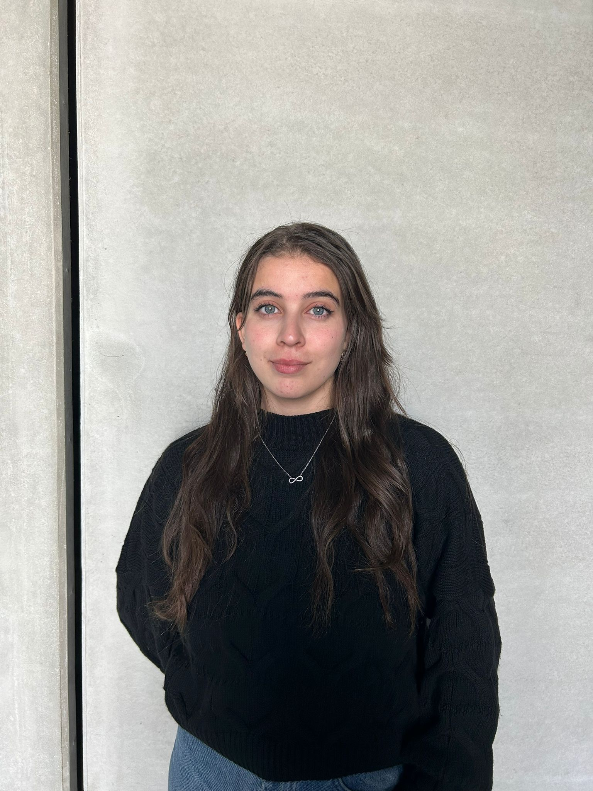
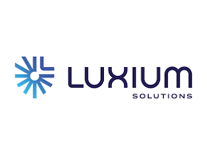
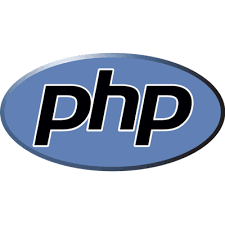
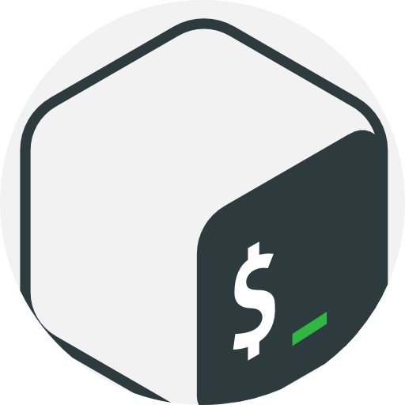
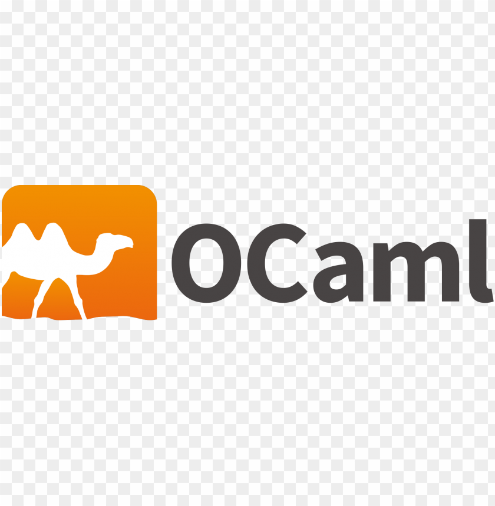
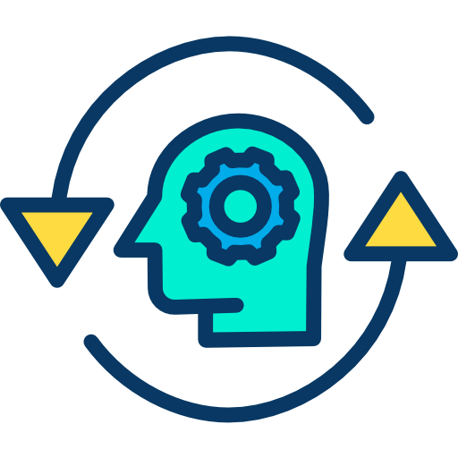
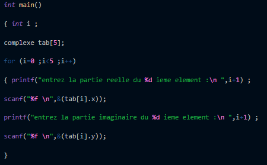

Assia Younsi
Développeuse Informatique
"Actuellement étudiant en Licence 3 Informatique à Sorbonne Université et apprenti en Développement et Digitalisation chez LUXIUM SOLUTIONS, je place la curiosité et l'innovation au cœur de mon parcours. Passionné par l'évolution technologique, je maîtrise un large éventail d'outils allant du développement (Symfony, JavaScript, Python, Java) à la programmation système (C, Bash).
Motivé par l'apprentissage continu, je prépare activement mon Master et recherche une nouvelle alternance. Mon objectif est d'élargir mes horizons techniques vers des domaines stratégiques tels que la Data, les Systèmes d'Information, l'Infrastructure et le Cloud.

À propos de moi
Actuellement étudiant en Licence 3 Informatique à Sorbonne Université et développeur en alternance chez LUXIUM SOLUTIONS, j'évolue au cœur des enjeux de la digitalisation. Mon quotidien ? Allier la rigueur académique à la réalité du terrain pour concevoir des solutions numériques performantes.
Polyvalent par nature, je navigue entre le développement web moderne (JS, Symfony, SQL, React) et la programmation bas niveau ou fonctionnelle (C, Java, OCaml, Bash). Cette diversité technique me permet d'aborder chaque problème avec une vision globale, de l'algorithmique pure à l'interface utilisateur.
Passionné par l'innovation, je prépare mon entrée en Master avec l'ambition de me spécialiser dans les domaines de la Data, du Cloud et des infrastructures. Ma philosophie est simple : transformer la complexité en solutions robustes et créatives, une ligne de code après l'autre.
“Apprendre, coder et résoudre : transformer chaque défi en opportunité.”
🎓 Formations
Licence 3 Informatique (Parcours DANT)
Sorbonne Université | 2025 - 2026
Licence 2 Informatique (Parcours DANT)
Sorbonne Université | 2024 - 2025
Licence 1 Informatique
Sorbonne Université | 2023 - 2024
Classes Préparatoires aux Grandes Écoles (CPGE)
École Nationale Polytechnique | 2022 - 2023
✨ Centres d'intérêt
- Sport : Volleyball & Running
- Arts : Photographie & Dessin
- Engagement : Vie associative & Bénévolat
Expériences Professionnelles
DÉVELOPPEUSE INFORMATIQUE ET DIGITALISATION - ALTERNANTE
LUXIUM SOLUTIONS (EX-SAINT GOBAIN) | NEMOURS, PARIS
Période : 09/2025 – 09/2026
- Conception & Design : Création de maquettes UI/UX avec Figma et modélisation de bases de données avec Lucidchart.
- Développement Fullstack : Utilisation avancée du framework Symfony pour le back-end et gestion des fonctionnalités applicatives complexes en PHP.
- Intégration Front-end : Développement d'interfaces modernes avec Twig, JavaScript, JQuery et Bootstrap.
- Optimisation : Analyse et amélioration des processus existants pour accroître l'efficacité des outils numériques.
- Collaboration : Travail en équipe avec gestion du versioning via Git et méthodologies agiles.
Environnement technique : Symfony, Twig, PHP, MySQL, JavaScript, JQuery, Figma, Lucidchart

DÉVELOPPEUSE INFORMATIQUE ET DIGITALISATION - STAGE
LUXIUM SOLUTIONS (EX-SAINT GOBAIN) | NEMOURS, PARIS
Période : 03/2025 – 09/2025
- Digitalisation des processus métiers internes via le développement d'applications web dédiées.
- Implémentation de requêtes SQL complexes et optimisation des flux de données inter-tables.
- Réorganisation structurelle de la base de données pour améliorer les performances.
- Développement d'interfaces dynamiques en PHP (Smarty) et JavaScript.
- Rédaction de la documentation technique et des guides utilisateurs.
Environnement technique : PHP, SQL, Smarty, HTML/CSS, JavaScript, Bootstrap, Git
Mes compétences

Python

Java

JavaScript

C

MySQL

PHP

Bash

OCaml
Mes Projets
CRÉATION D'UN AUTOMATE EN PYTHON
- Modélisation des automates avec des classes et dictionnaires.
- Implémentation d'une machine à états avec transitions, intégrant des callbacks pour le changement dynamique des états.
- Suivi automatique des états étudiants avec matplotlib et seaborn pour une visualisation en temps réel.
Environnement technique : Python, Jupyter NoteBook, Graphviz
Voir le projet
SIMULATION D'ÉCOSYSTÈME EN C
- Implémentation de fonctions itératives et récursives.
- Structure des données et manipulation de fichiers.
- Gestion de listes chaînées pour le stockage dynamique des données.
Environnement technique : C, Gnuplot, Visual Studio Code, makefile
Voir le projet
ANALYSE DE DONNÉES D'UN CYCLISTE EN PYTHON
- Création de fonctions permettant de visualiser l'évolution du cycliste.
- Visualisation des données en utilisant Numpy et Matplotlib.
Environnement technique : Python, Jupyter Lab, Google Slides
Voir le projet